out of direct sight.
All grazing animals must have very good scent development to select the choice morsels of herbage for their food, and also to warn them of an approaching enemy. They also must have good hearing development, and finally they must have good sight development to recognise an enemy and to see which is the best direction for escape. Since many grazing animals feed by night as well as by day,; the eye must be very large in size in order to take in more light at night, but this is purely a matter of size and not necessarily of actual development or high sensitivity.

S IMILARITY OF FORM DOES NOT MEAN S IMILARITY OF HABIT
Animals which appear similar in shape and form do not necessarily have similar habits. Rabbits and hares are similar in shape and form and feeding habits, but very different in habits.


Rabbits, as you know, live in colonies underground, but hares live singly in a 'form,’ or nest, on the surface.
When a rabbit is alarmed it seeks safely in the warren.
When a hare is alarmed it seeks its safety in running at speed.
A rabbit is attracted by newly dug earth. A hare prefers grassland and avoids new ground.
This dissimilarity of animal habits within their own family group or species exists throughout the whole animal kingdom.
One type of wild dog will hunt in packs, and another will hunt singly, as does the fox. One member of the cat family will climb trees, and pounce on its prey from overhead: another species will stalk its prey at a drinking pool and make its kill there.
One species of kangaroo or deer will live on open plains, and another species will avoid open country, and live only in forest land, while yet another species prefers hilly or rocky country. One type of pigeon feeds solely on fruits growing on trees and another type will prefer ground feeding, selecting fruits which have fallen to the ground, and ground growing seeds and grain.
THE BALANCE OF NATURE
Over countless ages a balance between the different forms of life has been attained.
As a simple example, if all the animals of a country were grass eating, there would be no check on their population growth, the grass which is their food would eventually be destroyed, and as a species the grass eating animals would die out in a couple of generations. There would be no balance.
Introduce flesh-eating animals into these conditions. They live on the grass eaters, and also on one another, and the population of all is kept at a lower level. Further, the weaker animals are killed off, and the stronger alone survive to breed. In a short time a balance between grass eaters and flesh eaters has been achieved.
This is the balance of nature.
Continuous destruction of wild life can easily upset this balance, and, like a chain reaction, the unbalance spreads. The uneven balance of nature can also be caused by the introduction of either a plant or animal foreign to the country.
In one part of New Zealand domestic cats gone wild became a plague. The cat plague was finally traced to the introduction of red clover.
It happened this way. The red clover is very deep throated, and only one species of bee could extract the nectar. This species of bee made its hive in the earth. With the plentiful supply of honey, this type of bee increased rapidly. A certain type of field mice liked the honey of this bee, and they too increased in population, feeding on the earth hives of the red clover bees. With the increase of mouse population the cat population flourished until finally the cats assumed plague proportions.
Excessive trapping also can upset this balance of nature, but trapping used intelligently can help nature to restore its balance.
Trapping can also be extremely valuable as an aid to the extermination of pests.
TRAPPING AND CHARACTER TRAINING
It has been shown that TRAPPING calls not only for an extensive knowledge of the mechanics of bush-made traps, but also for a thorough study of the habits and ways of life of all wild creatures.
The person who undertakes the work of trapping, whether for a livelihood or as a means of studying wild creatures at close quarters (as the artist and the zoologist must do) must be a person of wide understanding and great tolerance.
Trapping naturally brings about a love of wild animals, because it effects a full and complete understanding of their ways of life.
No true trapper could be cruel to wild creatures. His sympathies are too large to endure cruelty. The best way in the world to engender a love of wild animals is to be a trapper. Only then can you realise how intelligent and lovable all the wild creatures are.
This does not apply to the average professional rabbit-trapper, who is a trapper solely because it provides him with an easy means of making money quickly.
There are exceptions, too, among wild dog hunters, or
'doggers.’ M any doggers relish the challenge which is put up to them by a savagely intelligent 'killer’ dog with a big reward on its scalp. For these, the dogger has to use all his skill and cunning to match that of the wild dog.
To be efficient in trapping work the trapper must possess infinite patience, he must be able to stalk a wild animal in order to observe it at close quarters. He must learn about its sensitivities. In this and all the other work called for in trapping his own sensitivities are sharpened, and his intelligence and observation developed to a remarkable degree.
No people equal the native in powers of observation and deduction. This is due to the single fact that the native depends solely upon his hunting for his food.
What hunting has done for the native in perfection of his powers of observation, trapping can do for the white man to a lesser degree.
This development of observation and cultivation of the powers of deduction, coupled to the painstaking care which is necessary to all trapping work, play a major part of character development of an individual.
For example, in stalking an animal to observe it at reasonably close quarters, the would-be trapper soon learns that he must approach up wind, he learns to take advantage of every scrap of cover, and to avoid showing himself on the skyline. He learns that he can approach the animal more easily if he keeps still when the wind is still, and moves when gusts of wind move the bushes, stirring them into action. Only then will his movements pass unseen by the animal he is stalking. With the development of his observation, and aided by his intelligence he soon finds out that he can place an obvious object such as a piece of white rag on a distant bush where it will constantly attract the animal's suspicious attention, and, taking advantage of this, he can circle and approach from the opposite direction.
The making of a trap out of bush materials calls for a ready eye to see the right sticks quickly, and requires cunning, and coordination of head and hand to cut and shape the sticks correctly.
Having made the trap, it must be sited in the right place, and then watched. All this calls for observation and infinite patience. Once the animal is caught there comes with its capture an appreciation of its apparent helplessness, and a sympathy with its predicament.
This in turn leads to a genuine love of all wild life.
IS TRAPPING CRUEL?
Nature lovers will contend that trapping is cruel and unnecessary.
Undoubtedly this is true of much of the trapping which takes place now, and has taken place in the past. Trapping for the skins is cruel, wasteful and not in any way productive of good. Similarly in other countries trapping of animals for the pelts threatened whole species of wildlife with extinction.
The general run of mechanical trapping is extremely cruel.
M ost animal traps are similar to the common rabbit trap. A device with two steel jaws that clamp onto an animal’s leg generally breaks it, and holds the creature in agony until it is killed, possibly hours later, by the trapper.
These traps are not discriminatory. Protected animals and even birds are caught in rabbit traps set near warrens by river banks.
Pets, too, are caught and their legs broken so they either have to be destroyed or left maimed for life. Trapping of this nature is cruel and wasteful.
Trapping can be humane, and need not in any way cause suffering or extreme distress to the wild animal. Pen and box type traps can be used to catch animals alive. These type of traps cause the animals no discomfort or pain. Other types of traps such as logfalls kill instantly. The wild creature is not left in lingering agony for hours. When it touches the bait, death is merciful, and instant.
It is vitally important in all trapping work that you should never leave the trap, if set, unattended for more than a few hours.
A set but unattended trap may catch and hold an animal captive. The animal in the trap may either perish through lack of water or food, or may dig its way out, if the pen of the trap is made of stakes driven into the ground.
The trapping of small birds such as painted finches, larks, thrushes, lovebirds and parrots, where it is desired to capture them for sale into captivity, is cruel. It may be argued that these creatures’ lives are more secure when caged, and have freedom equal to their wild life if under proper conditions.
The trouble is that they rarely are under proper natural conditions when in captivity, and except for the 'lure’ type of cage trap, the trapping methods are cruel, and very destructive of life.
(The method of trapping small birds for pets usually makes use of snares on a stick set in a bush or tree which the birds frequent.)
This writer recommends to every bush-lover that if they ever see a snare stick they should destroy it immediately, without any regard for the feelings of the person who made it and placed it.
It will be argued also by many bush-lovers that it is not in the best interest of the community to make information about trapping or traps public. These people will delude themselves into the belief that small boys will set up traps and snares indiscriminately, to the immediate peril and destruction of all wild life. They will argue too that all trapping is cruel, and unnecessary. No bush-bred boy will trap unnecessarily, and no city-bred boy would have the essential knowledge of the wild to be able to trap anything with effect.
Trapping is not effective unless the trapper completely understands the habits and life of the wild creatures. This is something completely foreign to the city-bred boy.
REAS ONS FOR TRAPPING
The trapping of wild creatures, whether bird or animal, can only be justified on the grounds of 'Preservation.'
Some wild animals prey on other less-aggressive species
—particularly is this true of the domestic cat, which, having gone bush, becomes the No. 1 killer of wild life.
Cats are difficult to poison. They regurgitate the bait and continue their destruction unaffected. Fortunately they are comparatively easy to trap and when captured can be destroyed. Dogs which have gone bush, or which have mated with wild dogs, and also foxes, rank with cats as destroyers of native life.
CHAPTER 8
SHARES AND TRAPS
The ability to pick up a couple of dead sticks from the ground, and with a sharp knife and a little know-how produce a practical and workable release for a snare or trap is a valuable exercise in improvisation and inventiveness. As far as is known this the first time a collection of improvised releases and with this snares and traps has ever been published. Some of these are potential man-killers, developed by soldiers in jungle warfare to protect themselves. The knowledge of these possible man-killers must be treated with as much respect as a loaded firearm.
They are included because they could be lifesavers for man stranded in hostile country.
The snares and traps shown are far more humane than the vicious steel-jawed devices which clamp onto a wild creature’s leg, inflicting severe pain, creating panic in the captured animal, and hold it prisoner until it finally dies from pain, hunger or exhaustion.
Conservationists may condemn releasing the knowledge of how to make the mechanics for these snares and traps, implying that this will inevitably mean the destruction of local wild life.
This is not correct, in practice the opposite is the truth.
None of the traps are killers. The wild animal is caught alive and unharmed.
Most people, after examining the captive, feel that it is too interesting to destroy
(unless it is itself a destroyer), and will release it unharmed. More often than not the snares and deadfall, which are humane killers, will be used to capture the
“ pest” creatures, dogs and cats which have gone wild and are the biggest killers of local bird life, rabbits, foxes, and other “ vermin” animals. These are the
“ scavengers” which are the real destroyers upsetting the balance of nature in a locality.
Two cardinal rules are: never set a trap which might injure anyone without first putting up warning signs in the area, and never leave a trap or snare set, and then forget about it. Some wild creature may be caught in it, and if it is a trap, suffer hunger needlessly.
The following traps and snares are but a few of the many which you can improvise with a little ingenuity. The releases and principles are comparatively few in number, but the variations are infinite. When making your trap or snare, make it sufficiently strong to hold the animal when it is caught. You must put good workmanship into traps or they are likely to be ineffective. It is far better to spend an extra hour in work to make the trap secure and strong, rather than try and save an hour by thinking that a flimsy erection will suffice.
Knowing the animal which you are hoping to trap will enable you to decide whether to set the release 'fine’ or whether to set it
'tough,’ so that the animal will have to tug and worry the bait, and thereby become bold and unsuspicious.
Included in these traps are a few which could be exceedingly dangerous to man. These are given because they are very little known, and could possibly be of great value to explorers or others.
Several of these man-killers were devised during the War in the
Pacific by men who were adrift in the jungle and used these
'automatic sentries’ to make their camps safe from attack by hostile natives or enemy forces.
Some of the traps are illegal in certain countries, and the trapper should acquaint himself with the local game and trapping
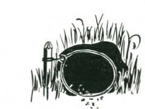
laws.
The type of trap you must make depends largely upon the animal for which it is being set, and the local conditions. Only experience can guide you in deciding which trap or snare will serve you best.
S IMPLE S NARE
Snare set over rabbit burrow.
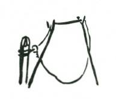
Snare set in path, held in position with twigs.
This is merely a running noose set either in the entrance to a burrow or other hiding place of the animal, or else set across one of its paths. The noose should be of some strong material; fine brass wire (picture wire) is probably about the best. The brass is stiff enough to bend easily into shape, the noose will stand by itself, and being very thin it will probably not be seen by the animal, and yet it is strong enough to hold the snared creature captive. One end must be very securely fastened to a peg or other reliable anchor.
If fine wire is not available for noose snares, cord can be used, or if this not available it can be spun, plaited, or twisted from local fibrous material.
Generally when cord is being used it will be necessary to hold the noose spread open. Very thin twigs can be used for this purpose. They should be set lightly in the ground, and have just

enough strength to hold the noose open. remember that the snared animal has sharp teeth and therefore the ability to chew its way out of the snare if given time. Wire obviously is difficult for the animal to bite, but with cord there is no difficulty, and an animal can release itself in a few minutes if it does not panic and struggle forward into the noose, as so often happens. When you set the noose snare it must be visited regularly at short intervals.
Snare set in ajimal path.
GROUND S NARE
TOGGLE AND BAIT STICK RELEASE
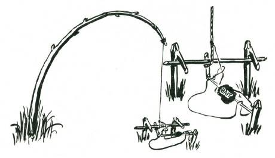
Select a site where there is a springy sapling. Lop the sapling of its branches and top. Bend the sapling over, and make a mark on the ground under the head of the bent sapling. This is the place where you will set the sticks for the snare. Cut two hooked stakes.
These should be sharpened at the point, and bevelled at the head so they will drive easily into the ground. They must be straight and strong, and preferably cut from dead wood. The hooks should be about two to three inches above ground level. Between the two hooks, and about twelve inches in front of them an anchor peg is driven into the ground. Three straight sticks for the release are selected. One must be long enough to go between the two forks and lie under them. The other is only about three inches long and is the toggle stick, and the third, which is about twelve inches long, is the bait stick. A stout cord is tied to the head of the lopped sapling, and the sapling itself is bent so that the head is over the two hooked stakes. Where the cord from the head of the sapling touches the cross stick the toggle stick, is tied securely, and above it another cord is tied and formed into running noose.
The toggle stick is passed in front of the stick between the two hooked sticks, and under, so that the cord lies hard against the front side cross stick.
The lower end of the toggle stick presses against the bait stick, which in turn presses against the anchor peg. The noose is laid over the bait stick.
When the animal touches the bait stick, it frees the toggle stick, and the upward spring of the sapling, acting swiftly, draws the noose round the captive bird or animal.
This snare should not be left set for more than twelve hours at a time. If the sapling is kept bent for too long it will lose its springiness, and render the snare ineffective.

An alternative release may be effected by using two forks driven in at such an angle that the cross stick is pulled against the lower side of the fork.
The setting of the noose may be varied for certain types of ground feeding creatures so that the noose, instead of lying flat on the ground, over the bait stick, is held vertically so that the animal or bird must put its head through the noose to reach the bait.
GROUND S NARE
TOGGLE AND BAIT STICK RELEASE
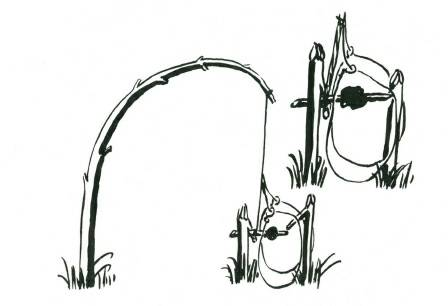
In this snare a springy sapling is lopped of its top and branches. Two strong hooked stakes are cut, and one with a shorter hook is driven into the ground directly beneath where the head of the sapling comes when it is bent over. At right angles to the hook of this stake, the other hooked stake is driven into the ground. It should be about one foot distant. The cord for the snare is tied to the head of the sapling, and the noose made in another cord tied just above the free end. The free end is tied to the bait stick, which held beneath the fork of one stake, is pulled upwards against the prong of the hook of the other stake. Setting can be varied in sensitivity by narrowing down the edge of the hook against which the bait stick is pulled. Noose, or nooses should be vertical and
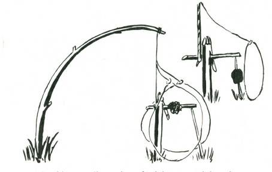
spread a few inches away from the bait, so that the animal must put its head or forequarters inside the noose to reach the bait.
This snare should be released after about twelve hours of setting to restore the springiness to the sapling.
GROUND S NARE
REVERSED TOGGLE BAIT STICK RELEASE
A whippy sapling, trimmed of its top and branches to reduce the weight, is bent over, and directly beneath its head a very stout hooked stake is driven into the ground.
A strong cord is tied to the head of the sapling, and the other end of the cord is tied an inch or so from one end of a toggle stick some eight to ten inches long. This long end of the toggle stick is p assed under the fork of the hooked stick (see sketch). The bait may either be placed on this toggle stick, or alternatively on the stick which it presses to the ground.
A noose is tied to the cord above the tie of the toggle stick, and brought forward, and held in position by thin twigs (not shown) so that it is a few inches in front of the bait stick. If the toggle stick is used to carry the bait it is advisable to put out two nooses, one on either side of the bait.
Care must be taken to see that the long end of the toggle stick is short enough to pass freely under the hooked stick. If the toggle stick is too long it will simply smack down on the ground and jam the release. It must be short enough to swing completely free under the hook.
GROUND S NARE
STEPPED BAIT STICK RELEASE
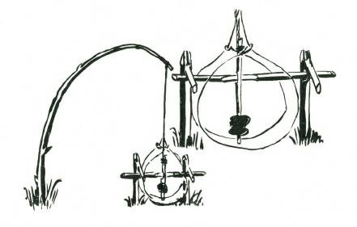
A whippy sapling is trimmed of its branches and head, and bent over. Note the point on the ground which will be directly under the head when the snare is set.
Two strong hooked stakes are driven into the ground about nine inches apart. A cross stick is roughly squared in the centre and placed beneath the two hooks with one of its squared faces directly facing the ground. The bait stick is cut with a cleanly cut faced step, the bottom of the step is on the lower end of the cut. To the top end of the stick the cord from the sapling is tied securely (a clove hitch or stopper hitch is good for this purpose).
One, or better still, two, nooses are run out from the main cord, and held vertically a few inches from the baited end of the stick by thin twigs (not shown). An animal touching the bait disturbs the seated laces, and releases the stepped bait stick which holds the bent sapling. Sensitivity of the release is effected by the 'grip’ of the seated face of the bait stick.
GROUND S NARE
NICKED BAIT STICK RELEASE
A whippy sapling, lopped of top and branches, has a stout cord tied to its head. The sapling is bent over, and directly beneath the lopped head, a strong hooked stick is driven into the ground.
The end of the hooked side is sharpened to a chisel point.
The bait stick is cut with a square nick so that this will engage the chisel edge of the hook. The cord from the head of the sapling is tied to the top end of the nicked bait stick, and the bait is secured on the lower end.
From this cord the noose is tied, and spread a few inches in front of the baited stick.
Fine setting is obtained by making the nick shallow, or for a stubborn release cut the nick deeply.
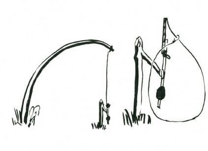
GROUND S NARE
CROSSBAR BAIT SNARE
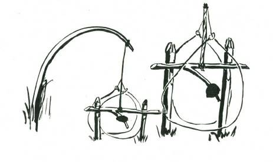
Two stout straight stakes are cut. On the upper end of each a nick is cut, with the straight step on the top end of the stake. The cross bar is now cut, with a side branch so that the end of the side branch is a few inches away from the cross bar. The side farthest away from the side branch is squared on top and sides to fit the squared faces of the stakes. A whippy sapling, lopped of its branches and top, is bent over so that it comes directly above the head of the two stakes driven into the ground. A cord from the head of the sapling is tied to the centre of the cross bar. The side branch is baited, and two nooses are spread either side of the baited crossbar.
Depth of cuts into the two stakes affects the degree of sensitivity of release.

GROUND S NARES
DOUBLE ENDED FIGURE FOUR SNARE
A whippy sapling, trimmed of its branches and head, is bent over and the site directly beneath the head marked on the ground.
Before releasing the sapling a stout cord is tied to the head. The three sticks for the release are now cut. One of these is a stake. It must be sharpened at the point, and bevelled at the head. About eight inches from the head two sides are squared off at right angles to each other, and about three inches below the head an undercut nick is made in one of the sides opposite to one of the squared sides.
The crossbar bait stick is now cut. This may be two feet long.

In the centre it is nicked or cut to provide a squared step less than one-quarter inch deep. On the end farthest from this step, and at right angles to it, an undercut nick is made. The toggle release stick is now cut. One end is sharpened to a chisel edge, and put in the undercut nick in the stake. The crossbar is placed with its step against the squared edge of the stake, and the undercut nick facing to the top. M ark on the toggle stick where the end should be cut to sit in the upper nick of the crossbar, and sharpen the toggle stick to a chisel point. Tie the free end of the cord from the sapling head to the toggle stick, and then tie on cord for four nooses, and set same in position with forked twigs.
GROUND S NARES
A DOUBLE SPRING SNARE
Two saplings are trimmed and bent towards each other. At their heads two interlocking sticks are tied. These sticks are cut so that they step into each other. The bait stick is lashed to one of these, and four cords for the nooses (two onto each sapling head)
are lashed.
The snare is set bending the two saplings over, locking the two sticks together, and then setting the nooses, two on each side of the bait, and a few inches distant.
When the animal disturbs the bait, it twists the interlocking sticks, and so releases the two saplings. In springing apart they pull the nooses against each other, and hold the captured animal securely.
GROUND S NARES
TRACK SPRING SNARE
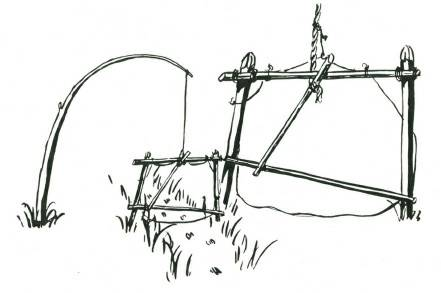
A site is selected on an animal trail where a tall sapling is available a few feet to one side of the track. The sapling is lopped of its branches and top, and a stout cord is tied to the head. Where the bent sapling crosses the trail tall stout pegs are driven well into the ground on either side of the track. To the tops of these stakes a cross bar is securely lashed. There may be occasions when convenient trees will serve instead of stakes.
A stout cord or rope is tied to the head of the sapling and a few feet along the cord a thin strong stick is tied. This stick should nearly reach from the crossbar to the ground. The cord from the sapling is tied a few inches below one end. This end is placed under the crossbar, and the lower end which will now pull forward strongly with the pressure of the bent sapling’s spring, is laid against a thin cross-stick. The noose of the snare is lightly tied to the top crossbar and the stakes to keep it spread open. Release is effected when the animal touches either the bottom stick, knocking it down, or the toggle stick with the cord. Either action will release the holding down of the sapling, and it will spring upright, tightening the noose around the animal's neck.
TREE S NARE
SIMPLE NOOSE FOR TREE CLIMBING ANIMALS
NOTE—This snare is prohibited in many areas, and should not be used unless absolutely necessary, and only where its use is permitted.
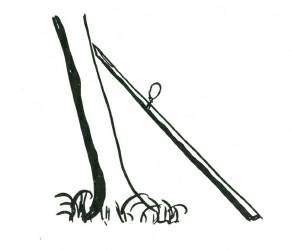
A site is selected by examining a tree which shows the claw marks of tree climbing animals on its bark. The 'lean’ of the tree is carefully examined, and on the upper side of the 'lean’ a stout straight pole eight to ten feet long, and at least three or four inches thick is placed to make a 'path’ for the animal from the ground to well up the tree trunk. The animal will use this pole to climb the tree on its nightly excursions. Onto the upper end of the pole set a simple wire noose, fastened securely to the pole itself.
The animal in climbing or descending the pole will put its head

or paw into the noose, and so ensnare itself.
Note.-A point of interest is that most tree living animals will descend a tree if the base of the tree is consistently beaten with a heavy instrument such as the back of an axe or a heavy club.
Nocturnal animals will descend a tree in broad daylight, but the blows must be continued and fairly heavy. It is probable that the animal feels the shock through (lie tree and, obeying an impulse to quit before the tree falls, leaves its hiding place. This is an excellent method of getting night feeding animals into daylight for photographing.
TREE S NARES
NOOSE SNARE STICKS FOR SMALL BIRDS
NOTE.—This is a prohibited snare, illegal in many districts. It should not be used except to catch pests.
A straight stick three to four feet long is selected. Onto this many fine nooses, each between ½” and 1” in size, of horse hair are tied securely and the stick is then tied with the nooses uppermost to a shrub or small tree which is a favourite resting place for small
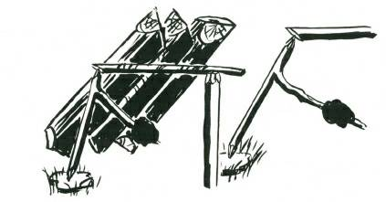
birds. They alight on the stick, and their feet become entangled in the snares. One or two birds so caught will call others to them, and in a short time seven or eight birds will be all snared on the noose stick.
This type of snare stick is condemned for general use. It has a place for the orchardist to clear starling and fruit eaters from his orchard, but it should not be used to snare small birds such as finches and wrens for the purpose of putting them into captivity. If you see such a stick, obviously set for such a purpose, take it and destroy it. You will be doing the birds a good turn by this action.
LOGFALL
SLIP RELEASE OF BAIT STICK
This logfall is suitable for ground living animals, and depends for its action upon the turning or twisting of a forked bait stick, one end of which is sharpened to a point which in turn supports the smoothly cut face of the cross bar on which the logs are lying.
Select a site where the animals feed. Cut your bait stick with a widely forked prong. The lower end should be roughly sharpened, and the top end brought to a sharp point. A stout stake is sharpened and bevelled at the head so that it is nearly flat. This stake is driven securely into the ground. The two or three heavy logs for the fall are selected and trimmed so they will lie together on the cross bar. The cross bar is cut with a squared side at one end, and the other end is trimmed off with a smoothly inclined face. The squared side is laid on the top of the bevelled stake. The logs are laid on the cross bar, and the sharpened point of the bait stick is put under the inclined cut on the end of the cross bar at such an angle that it will slip off if the bait stick is twisted. The lower end of the bait stick rests on a chip of bark or a smooth flat stone so that it will not sink into the ground. Sensitivity is adjusted by the angle of the bait stick on the cut at the end of the cross bar.
LOGFALL
SQUARED FACE RELEASE OF BAIT STICK

The general construction of this logfall release is similar to the slip release. A stout stake is sharpened and driven into the ground as for the preceding trap. The cross bar, except for two squared sides in place of the smoothly cut inclined end is exactly the same.
The bait stick is forked and at the upper end a square seated cut is made to take the squared side of the cross bar, so that when the weight of the logs is resting on the cross bar the squared side is securely resting on the square cut at the top end of the bait stick.
When the prong with the bait is disturbed the bait stick is twisted, and the crossbar unseated so that the logs fall on the animal beneath, either breaking its back instantly or crushing its head so that death is immediate.

LOGFALL
FIGURE FOUR RELEASE
In this type of logfall the two or three heavy logs are bound to cross pieces at head and foot so that they will lie together.
Alternatively a platform of light sticks weighted with heavy stones can be made. Release is effected by the Figure 4 method. For this release three strong sticks are selected, one about two feet high for the upright, one about three or four feet long for the bait stick, and one about eighteen inches for the release stick.
The upright is sharpened to a chisel edge at the top, and twelve inches below this and facing the same direction as the straight edge of the chisel end the stick is squared off on two adjacent sides. The bait stick is cut with a nick sloping backwards a couple of inches from the thickest end, and about twelve inches further along with a squared step, the squared side of which is farthest away from the nick. The bait is at the far end of the bait stick. The release stick is sharpened to a chisel edge at either end, and a nick parallel to the chisel edge is cut some few inches from one end. Setting of the trap is effected by standing the upright stick a few inches from the end of the logs. Lifting the logs and putting the release stick under the cross bar, with the chisel cut of the upright in the nick in the release stick. The far end of the release stick is seated in the nick at the end of the bait stick so that it draws the square face of the cut against the squared face of the upright stick. Any disturbance of the bait releases the logfall.
LOGFALL
TOGGLE RELEASE
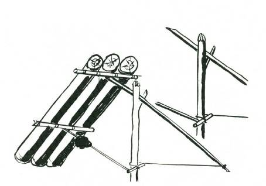
Two or three logs are secured to a cross bar as for the figure 4 release. The release sticks consist of a forked stick about two feet long for the upright, a support stick about three feet long, a toggle stick of four or five inches, and a bait stick, long enough to reach from the upright stick to the lower cross bar holding the logs together.
The trap is set by standing the upright with the fork uppermost a few inches in front of the logs. The support stick is laid over the fork, and to its farthest end a cord is tied. The length of the cord should reach from the end of the support stick to the upright stick. The end of the cord is fastened to a toggle stick and this is passed around the upright. Against one end of the toggle stick the bait stick is placed so that its farthest end presses against the lowest cross bar. Release is effected when an animal disturbs the bait stick, and so releases the toggle, allowing the logfall to drop.
In place of a group of logs for any of these traps, a platform of stakes, heavily weighted with big stones, may be used with equal efficiency.
LOGFALL
TREE LOGFALL
NOTE—This is an exceedingly dangerous trap. It is so absolutely unsuspected and sudden that it should only be used either to guard against surprise from attack if in a country of hostile natives, or if set to kill large animals. Notices of warning: should be placed at either end of the path. This trap is a man-killer.
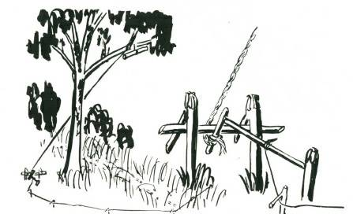
A site is selected along a trail which the animals use regularly.
The site must have a branch of a large living tree overhanging the path. A heavy line is thrown over the branch so that when allowed to hang free its end will lie on the path. To this line a stout rope is tied and the rope hauled up and over the branch. To one end of the rope a heavy log is slung so that it hangs horizontally.
The log is hoisted to the branch, and the rope brought back so that it is concealed by the tree trunk; a toggle is tied where tire rope touches the ground. At this place two very strong hooked stakes are driven into the ground, and a release similar to any of the noose releases (toggle and bait or reversed toggle) are used to hold the rope.
To what would be the bait stick in the snare release, lengths of cord or ground vine are tied for a trip cord and by means of hooked sticks the trip cord is led through the bush parallel to the animal’s path to positions on either side of the place where the log will drop when it falls. This distance can be calculated by allowing for the log to fall at the rate of 28 feet the first second, 56 the second, and 28 feet more for each further second, and so on. (Drag on the cord reduces the log’s rate of fall to this figure.) If the animal travels at three miles an hour, it moves forward 4 feet 6 inches a second.
Thus, if the dog is 100 feet above the path it will take two and a half seconds to fall and the animal will have moved 11 feet 6 inches after it has pulled the trip with its feet.
After setting this trap it should be given a test drop and, if satisfactory, reset only after placing warning notices several yards either side telling people to pass around the area, and not under any consideration to pass along the track. Failure to provide these notices might easily lead a careless person into gaol for manslaughter.
remember this trap is a potential man-killer.
BOW TRAP FOR GUARDING A PATH

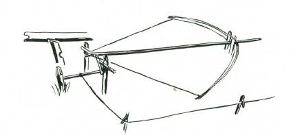
This is an extremely dangerous trap, and a certain man-killer if the bow is strong and the trap properly set. It should not be used except in cases of emergency.
A bow of considerable strength is made, and lashed to two stakes driven securely into the ground. The two stakes are set an inch or so apart. At right angles to the bow, and at the position where the bow string will come when the bow is drawn, a third stake is driven into the ground. The horizontal angle between the lower end of this peg and the place where the bow is lashed to the twin pegs should be such that the arrow will be given correct elevation to catch the man or animal at a vulnerable height when the trip cord is touched. The site should be at the bend of a trail or path.
Release can be effected by a hooked stick which has a square nick cut on the outside edge of one side, and at right angles to this cut a reversed nick is cut to take the bow string. The rear peg is squared at its rear and on one side to form a right angle. The squared cut of the release stick engages the squared face of the stake, and the thong is hooked over the undercut nick, so that the bow is held drawn back to the rear peg. The arrow notch is in the thong. Release is effected by tying the release cord to the other end of the hooked stick and leading the release cord through the grass or bush to a position at the edge of the path. Guiding of the cord is effected by means of inverted hooked sticks. At the path the release cord is tied to convenient growing material such as a wisp of grass, a ground vine, or even a casual stick.
An alternative release is effected by deeply nicking with a square face the underside of the arrow. Into this nick a chisel edge release toggle stick is engaged. The release stick passes in the rear
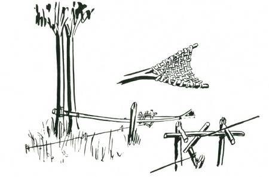
of a short cross bar so that the forward-pull of the bow pulls the lower end of the release stick to the rear. This lower end is pressed against a trigger stick which is pushed against an anchor peg. To this trigger stick the trip cord is tied and from here it is led through the bush to the path, and set as a trip cord across the trail in the same manner as the hooked stick release.
A WORD OF WARNING... remember that this trap is a mankiller. Never ever leave it set and unguarded unless to defend yourself. Place warning signs on the path.
THROWER
There may be occasions when it is desired to create a diversion on one side of a path in order to frighten animals or people moving along the path away from it and into an ambush. For this purpose a thrower can be set up at a convenient distance from the path so that when a trip cord is touched the thrower will hurl a stone or other missile onto the path, and so drive the animal off the path and towards the hunter.
A forked springy sapling is lashed between two trees as for the stabber. The end of the sapling is forked, and in the forked end a shallow pouch is woven between the forked sticks. These forked sticks should be at an angle of about 45 degrees from the horizontal towards the path. The sapling is bent back and down and secured as for the stabber, and about four feet short of the place where the head came when it was at rest a very stout stake is driven into the ground to act as a 'stop' to the forward thrust. The sapling must be lashed fairly high up the two trees and bent downwards to the securing release, so that when it is tripped the movement is upwards. When the sapling is released and swings upwards it carries the stone in the pouch, and coming suddenly to the stop the stone is thrown from the forks forward to the path.
PIG S TABBER
NOTE.—This is a very dangerous trap to leave set where it might injure anyone walking along the path. Warning notices should be set on
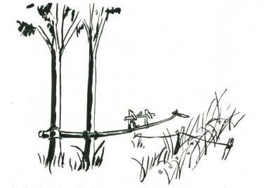
A site is selected where two trees grow close together near the path the animal uses. A very springy sapling is cut, and lashed between the two trees so that when unbent it reaches to the centre of the track. To the end of this sapling a sharp dagger-like knife, or failing that, a pointed spear of hardwood is lashed. If wood is used, make sure that it is straight grained, and harden the end by scorching over fire. Sharpen to a good point.
The sapling is bent back as far as your strength will permit and note where the bent back of the sapling comes to above the ground.
A few feet back from this point set the sticks for the release given in the snare 'Toggle and Bait Stick’ (page 236). To the bait stick of
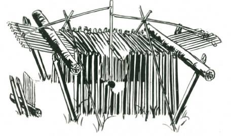
this release tie the trip cord, and run this along the ground to the position at which the bent sapling came when the head was straight over the path. The trip here should be very light and raised a few inches above the ground. The animal passing along the trap in either direction releases the trip, and the sapling is released with the spear.
Caution. remember that this is a very dangerous trap and if used, warning notices must be placed either side.
BOX TRAP TO CATCH ANIMALS ALIVE
DOUBLE-ENDED PEN WITH SELF-LOCKING DOORS
A strong pen of the size required is constructed with both ends left open. The pen is completely roofed over, and in the centre, one of the cross sticks across the roof is squared on one side and on its under surface. The cross pieces at the extreme ends are secured extra strongly to take two drop doors. A couple of inches beyond the line of the side walls, and about three inches from the end uprights very strong stakes are driven into the ground at an angle leaning away from the line of the pen. The two doors are made and hinged with loops of rope or strong vine to the end crossbars, across either end of the pen. On the outside, two support sticks are crossed about seven to ten inches above the roof of the pen.
The release sticks are sharpened at one end to a chisel edge, and the bait stick is cut with a squared step about eighteen inches below its top (the square face at the lower end). Ten to twelve inches above this and parallel to the first cut, two square-nicked cuts are made with the squared face on the top side of the cut. The trap is set by putting the bait stick between the crossbars and engaging the squared cut of the bait stick with the squared face of the cross bar.
The chisel end of one of the release sticks is placed in one of the top nicks of the bait stick, and the other end between two of the crossbars of the door. The release stick sits on the support sticks as a fulcrum. This is repeated at the other door. Both doors are now raised, and any disturbance of the bait stick will release the support sticks and the doors will drop. The locking device is effected by cutting two heavy poles about eight to ten inches longer than the trap is wide. These are laid across the top end of either door. When the doors start to drop the logs roll down the falling doors, and jam against the outward leaning stakes, thus
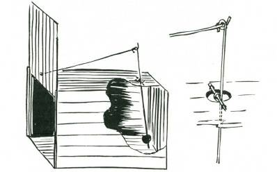
wedging the doors tight.
PORTABLE BOX TRAP
BOX TRAP TO CATCH ANIMALS ALIVE EXTERNAL RELEASE
A box is made exactly similar to the box trap on the following page. A hole is bored in the roof 3 inches from the closed-in end.
The bait wire is made with an eye at the top, and about four inches below this another eye, and the hooked portion for the bait some eight or ten inches below this lower eye. With this release the cross wire is placed through the lower eye, with the top eye above the roof of the box. The bait is fastened to the hook inside the box, and the release wire secured with its own eye to the top eye, and its

farther end lying longways along the roof with the end itself in a small hole through the bottom of the drop door, and in such a position that it holds the door up. When the animal takes the bait, and drags backward with it, the top end of the bait wire is forced to the rear, and so withdraws the wire at the door from the hole and allows the door to stop, imprisoning the animal.
PORTABLE BOX TRAP
BOX TRAPS TO CATCH ANIMALS ALIVE INTERNAL RELEASE
A stout box of a size suitable for the animal to be trapped is made. To one end a sliding door is fitted. This door must slide up and down easily between two grooves. On the inside of the door, and near the lower end a small hole is bored for about a quarter of an inch in depth.
On the roof of the box, about three inches from the closed-in end a hole about one inch diameter is bored right through the wood.
The release mechanism is made by taking a piece of stiff wire (8 gauge), bending an eye in it at the head, and another eye about six inches lower down, and immediately below this lower eye bending the wire in a wide hook, and cutting it off at the end of the hook.
Through the top eye another short piece of wire is passed (with the eye in the centre of the hole in the roof) and the short piece of wire lying parallel to the end of the box, it is secured in position with a staple at either end. Another piece of wire is fastened to the lower eye, now inside the box. This piece of wire must be just so long that when the hook is slightly forward, the piece of wire will engage in the hole which was bored in a short distance in the foot of the door.
The trap is baited by securing the bait to the U-shaped hook on the lower end of the wire inside the trap. The free end of the inner piece of wire is placed inside the hole at the lower end of the door.
When the animal disturbs the bait the wire holding up the door is withdrawn, and the door drops, imprisoning the animal.
PORTABLE BOX WITH INS IDE S TICK RELEAS E
BOX TRAP TO CATCH ANIMALS ALIVE

There are occasions when a piece of wire may be unobtainable, then this internal stick release can be improvised. The box is made as for the preceding portable box traps, complete with sliding door.
For the release three forked sticks are used with the bait stick, which should have a fork at one end. The length of the three forked sticks should be such that two of them are equal and about threequarters the height of the inside of the box, and the third should be about half the height. The fork at the end of the bait stick is so trimmed that one end of the fork is about an inch shorter than the other. Setting is effected by placing the bottom of the door on the longer of the two arms of the fork bait stick with the shorter arm in the inside of the door. The two longer forks are set near the end of the box, their forks holding the far end of the bait stick a few inches from its very end. The shorter forked stick is placed with its fork over the farthest end of the bait stick, and its other end against the roof. The bait is secured to the bait stick near the first pair of forks. When the animal takes the bait, it either disturbs the setting of the forked sticks which hold the slide door up, or it pushes the forked end of the bait stick inwards and allows the door to drop.
LOG ROOFED PEN
BOX TYPE BAITED TRAP FOR CATCHING ANIMALS ALIVE

A pen of adequate size for the animal to be trapped is strongly constructed. The pen is built with two sides and one end only.
Across the closed end a strong cross bar is secured. Release of the log weighted roof is by means of a toggle and bait stick almost exactly similar to the toggle release of the logfall. A forked stick is stood upright a few-inches from one side of the trap at the open end. Across the fork a supporting stick is placed with the end of the roof logs resting on it. To the far end of this supporting stick a

length of cord is fastened, and to the end of this a short toggle stick is tied. The end of the toggle stick is pressed against the bait stick, which in turn is pressed against the stakes opposite and at the far end of the pen. Disturbance of the bait stick releases its engagement with the toggle stick, which in turn releases the support stick and the roof falls heavily, imprisoning the animal in the pen.
BOX TRAP FOR CATCHING ANIMALS ALIVE
FALLING CAGE, FIGURE 4 RELEASE
A cage, either of sticks lashed to a pyramidal or other suitable shape, or of boxwood, or netting is made of adequate size. Release is effected by means of the figure 4 release. This is an excellent trap for ground feeding birds, and if the ground is baited with grain, or small fruits it is a certain trap for pigeons. The upright stick is cut with a chisel edge at the top, and a few inches from the bottom end it is squared on all four sides. The support stick is sharpened to a chisel edge at one end, and where it will cross the top of the upright, a nick is cut parallel to the chisel edge. The bait stick has a nick undercut at the thickest end, and at the place where it will cross the upright it has a cut made with a square face at the end of the cut farthest from the undercut nick. Setting is effected by standing the upright in front of the trap, and placing the support stick with its nick on the chisel edge of the upright, and the upper end supporting the raised edge of the box. The chisel end of the support stick is placed in the undercut nick at the end of the bait stick. The squared cut in the bait stick should now engage with a squared face of the support stick, and with the baited end of the stick well under the trap.
WIRE CAGE TRAP FOR RABBITS

One of the most effective methods of catching rabbits is by means of a wire netting cage trap set at the entrance to one of the burrows of the warren. The warren itself is carefully examined, and a suitable burrow selected for the site of the trap. All the other burrows are covered with a layer of paper stuffed into the hole and packed for a few inches with earth. At the selected burrow the trap, simply made in the form of a long cage of wire netting with one end closed and with the other end as a wire door suspended from the top of the cage and falling so that it can be pushed easily into the trap but when it falls cannot be pushed outwards.
The rabbits in the warren coming to the burrows stuffed with paper are disturbed and suspicious of the rustle of the paper, and come finally to the burrow which has the wire cage in front of it.
They push forward into the opening and the door lifting inwards permits them to enter the cage. When they are inside the cage the

door drops behind them, and there is no escape back into the safety of the burrow. Ten or twelve rabbits a night can be taken from a warren with this trap, which is far preferable on humanitarian grounds to the steel-jawed commercial trap so commonly used.
NET TRAP FOR CATCHING ANIMALS ALIVE
An alternative to the box type traps for catching animals alive and without injury can be devised by using many of the releases
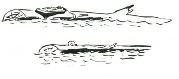
shown, in combination with the pull of a springy sapling. For purposes of demonstration in these pages one such arrangement is shown above. The net, of suitable size and strength, is spread on the ground and the centre is baited, as for any of the spring snares.
When the release is effected the four corners of the net, being tied to the main rope holding down the sapling, are suddenly pulled upwards, enfolding the captured animal in the net without injuring it in any way. The animal in its struggles gets its legs through the mesh of the net, and so cannot climb out or tear the net to escape.
It may chew its way out if the net is left unattended for any length of time.
US E OF A RAT TRAP OR A FIS H-HOOK FOR DUCKS OR GEES E
Select an area where, by the tracks and droppings, you know wild duck or geese feed. An ordinary rat trap, baited with a frog, and securely tied to a convenient log or stake is set either on a stone, or some place where it will lie flat and secure. The bird, in taking the bait, springs the trap, which cutting into its skull kills instantly. The fish-hook baited with a frog is tied to a stake by a short length of line. When the bird takes the bait it is hooked and held for killing. Alternatively, the cord from the fish-hook can be tied to a heavy stone, which, dislodged when the bird takes the bait, falls into the water and drowns the bird.
These two methods of catching wild birds are illegal in many countries, and are decidedly unsporting. They would be a legitimate method of getting game for food only in emergency.
Another method frequently used by poachers for killing pheasants, pigeons and grain-eating birds is to soak split peas and then put thin wire through them, leaving about 1/8-inch of wire projecting from either side of the peas. The bird pick up the peas. The wire pierces their crops and they die quickly. This method is strictly illegal and destructive, and should never be used. You may find such 'doctored’ peas or grain in an area and, if so, immediately inform the nearest game warden or ranger. Vandals who destroy bird life by such means as this are severely punished in most civilised countries.
BLIND ROLLER FOR AN AUTOMATIC FIS HERMAN

A discarded blind roller is fixed, with its bracket to either a pole or the convenient branch of a tree. The fishing line is secured to the roller, and then, with the roller pawl engaged, the line is pulled so that it touches the water, or until the tension on the line is considered to be adequate. The roller is removed from the brackets and rewound by hand. This will give tension to the line to play the fish. The baited hook is lowered into the water, making sure that the pawls are engaged. When the fish strikes it will disengage the pawls, and the tension of the wound-up roller will play the fish, finally bringing it almost to the surface of the water. The lazy fisherman simply has to unhook his catch, rebait the line and cast in for his second catch.
In general it is better to set the blind roller on to a pole which can be set horizontally above the water, and lashed to a convenient tree or stake, than to set the roller onto a branch. It is easier to

remove the catch and reset, and also the pole with the roller blind can be moved to other locations.
FIS H TRAP
ARROWHEAD TIDAL FISH TRAP SUITABLE FOR AREAS OF FOUR TO SIX FEET TIDES
This is a permanent trap and will always ensure a plentiful supply of fish at all seasons. Select a site on an estuary or sheltered cove where the beach slopes fairly evenly. At this site run a fence of wire netting out at low tide so that the top of the fence will be a few inches above high water level, and the lower end will have a foot to eighteen inches of water at low tide. From the low water end of the fence run back two wing fences each at an angle of about forty-five degrees. These two wing fences should come halfway up to the high level water mark, and from the shore end of these two wing fences run two short fences parallel to the beach and stopping with a turnback to the arrowhead about two yards short of the centre fence.
The fish come in to the beach on the rising tide and feed swimming along the beach. They come to the central fence, and turn along it to the deep water, reach the corner at the deep water end and are turned by the wing fence, and again by the fence parallel to the beach. You can clear the trap at low tide, taking from it only those fish which you need. This trap has the advantage of only catching fish of good size, and not killing anything which may not be required for food. There will always be fish left in the pool at low water, and some of these are bound to find their way out to deep water at the next rise of the tide.
TIDAL ROCK POOL TRAP
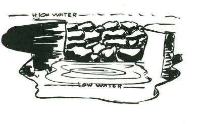
A site is selected where there are a number of rock pools well covered at high tide, and barely dry at low tide. One such rock pool is selected, and heavily baited with such food as crushed up shell fish, small portions of freshly killed fish, crushed up rock crabs and the like. Across the normal opening of the rock pool a wall of rocks is built so that the top of the wall will be a few inches below the water at high tide.
This should be done at a time when there is a low tide at dusk and dawn.
The fish, feeding at night on the rising tide, come to the rock pool, drawn there by the lures and baits lying on the bottom. With the fall of the tide they are trapped until the next full tide and if the